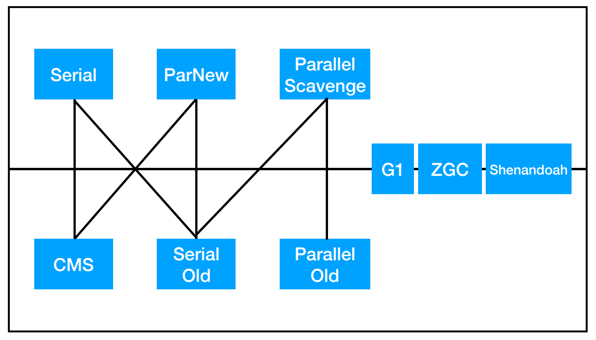
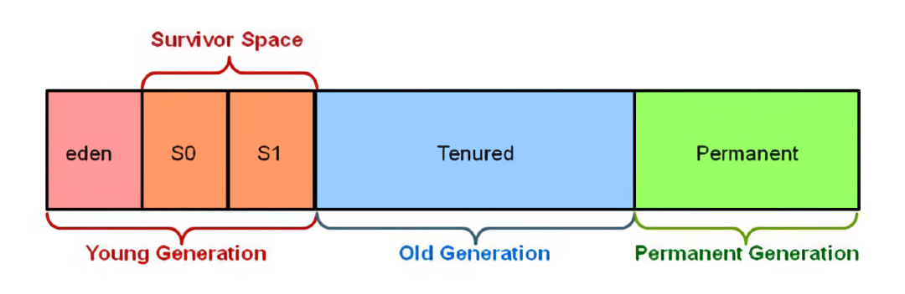
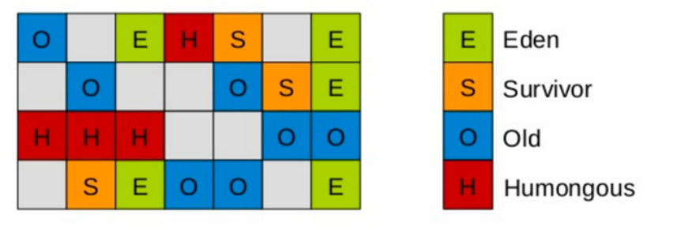
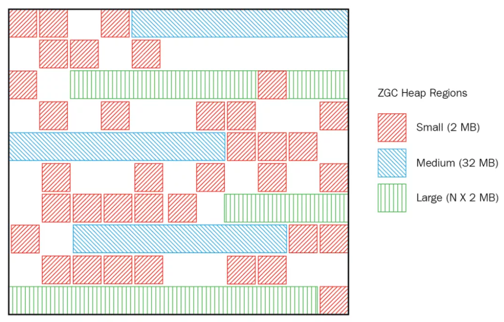

Ch08-Java 之 垃圾回收器
September 10, 2017
垃圾回收器经过了很长时间的发展，很多垃圾回收器也慢慢的埋入到了历史场合中。这里简单的做个划分，已经淘汰的垃圾回收器归到古典 GC的范畴，目前还在使用以及正在开发的归到现代 GC的范畴。

1. 古典 GC #

- 年轻代一般使用 Mark-Copying 算法
- 年老代一般使用 Mark-Sweep 算法或者 Mark-Sweep-Compact 算法
2. 现代 GC #
相比较古典 GC，现代 GC 对堆内存几乎都取消了明显的分代划分，使用 Region 的方式来管理内存。
2.1 G1 #

2.2 ZGC #
